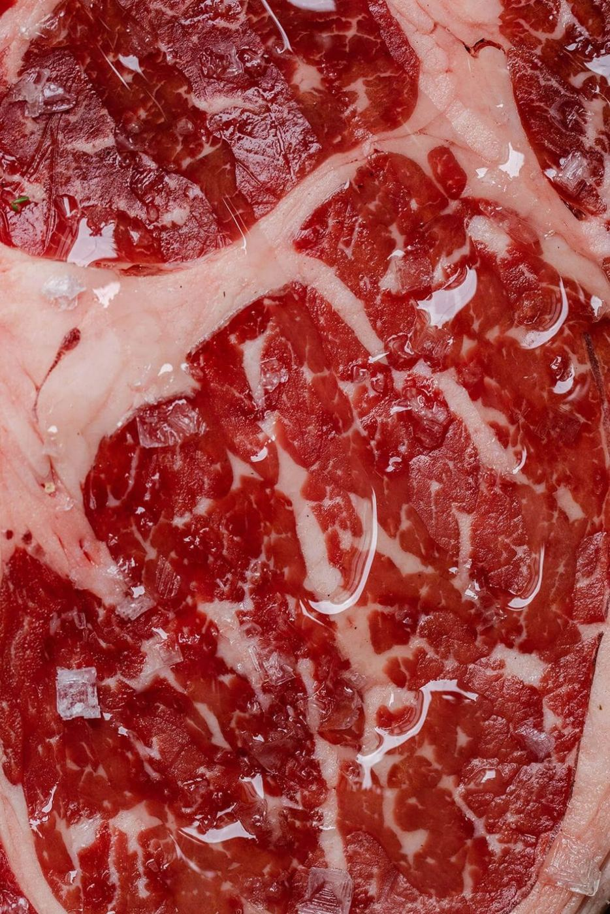

부위표
도해에서 부위를 누르면 표의 같은 줄로 이동합니다. 가격은 오늘 10:00 기준입니다.
고르기 · 정렬
국내산 소 · 1등급 대역
도해나 표에서 부위를 고르세요.
| 부위 | 100 g | 숙성 | 용도 | 두께 | 남은 양 |
|---|---|---|---|---|---|
| 13,900원 | 21일 | 구이, 스테이크 | 2.5 cm | 9.6 kg | |
| 14,900원 | 21일 | 스테이크, 구이 | 3 cm | 4.2 kg | |
| 16,900원 | 14일 | 스테이크 | 3 cm | 2.8 kg | |
| 7,900원 | 없음 | 불고기 · 볶음, 구이 | 1 cm | 5.1 kg | |
| 9,900원 | 7일 | 구이, 스테이크 | 1.5 cm | 3.4 kg | |
| 12,500원 | 14일 | 구이 | 1 cm | 3.9 kg | |
| 9,800원 | 없음 | 구이, 국 · 탕 | 0.2 cm | 4.6 kg | |
| 7,400원 | 없음 | 국 · 탕 | 2 cm | 6.8 kg | |
| 6,900원 | 없음 | 불고기 · 볶음, 국 · 탕 | 0.3 cm | 7.2 kg | |
| 6,400원 | 없음 | 수육 · 찜, 국 · 탕 | 3 cm | 5.5 kg |
이 용도에 맞는 소 부위가 없습니다.
국내산 돼지
도해나 표에서 부위를 고르세요.
| 부위 | 100 g | 숙성 | 용도 | 두께 | 남은 양 |
|---|---|---|---|---|---|
| 2,780원 | 5일 | 구이 | 2 cm | 14.5 kg | |
| 2,980원 | 5일 | 구이, 수육 · 찜 | 1.5 cm | 11.2 kg | |
| 4,200원 | 없음 | 구이 | 1 cm | 2.1 kg | |
| 3,600원 | 없음 | 구이 | 1 cm | 1.6 kg | |
| 1,580원 | 없음 | 수육 · 찜, 불고기 · 볶음 | 0.3 cm | 16 kg | |
| 1,480원 | 없음 | 불고기 · 볶음, 구이 | 1 cm | 8.4 kg | |
| 1,180원 | 없음 | 불고기 · 볶음, 수육 · 찜 | 0.3 cm | 12.3 kg |
이 용도에 맞는 돼지 부위가 없습니다.
수입 양 · 생후 12개월 미만
도해나 표에서 부위를 고르세요.
| 부위 | 100 g | 숙성 | 용도 | 두께 | 남은 양 |
|---|---|---|---|---|---|
| 6,900원 | 7일 | 구이, 스테이크 | 2.5 cm | 3.2 kg | |
| 3,900원 | 없음 | 구이, 수육 · 찜 | 1 cm | 4.4 kg | |
| 3,500원 | 없음 | 스테이크, 수육 · 찜, 국 · 탕 | 2 cm | 5 kg | |
| 2,900원 | 없음 | 구이 | 1 cm | 2.4 kg |
이 용도에 맞는 양 부위가 없습니다.
표 읽는 법
- 100 g
- 오늘 10:00 판매 가격 · 손질 후 무게 기준
- 숙성
- 숙성고에서 보낸 일수 · 건식은 숙성고 A
- 두께
- 용도에 맞춘 권장 두께 · 주문 때 바꿀 수 있음
- 남은 양
- 매장 4곳 판매대 합계 · 09:40 집계
